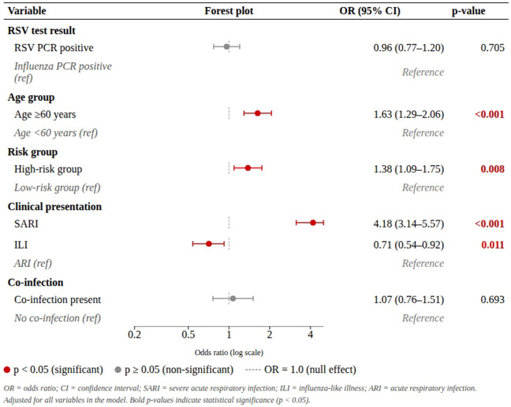
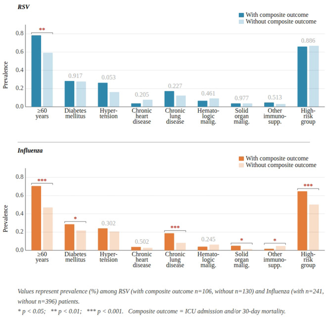
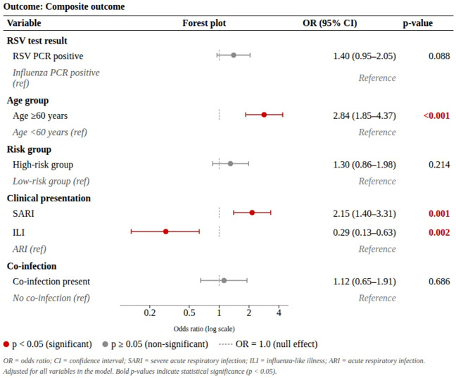

Comparison of clinical outcomes associated with RSV and influenza infections in adults: a multicenter study from Türkiye (for AP-TR)
Affiliations & Notes
1Department of Infectious Diseases and Clinical Microbiology, Ankara University Faculty of Medicine, Ankara, Türkiye
2Department of Infectious Diseases and Clinical Microbiology, Koç University Faculty of Medicine, Istanbul, Türkiye
3Department of Biostatistics, Ankara University Faculty of Medicine, Ankara, Türkiye
4Department of Infectious Diseases and Clinical Microbiology, Ankara Bilkent City Hospital, Ankara, Türkiye
5Department of Infectious Diseases and Clinical Microbiology, Atatürk University Faculty of Medicine, Erzurum, Türkiye
6Department of Infectious Diseases and Clinical Microbiology, Gazi University Faculty of Medicine, Ankara, Türkiye
7Department of Infectious Diseases and Clinical Microbiology, Uludağ University Faculty of Medicine, Bursa, Türkiye
8Department of Infectious Diseases and Clinical Microbiology, Erciyes University Faculty of Medicine, Kayseri, Türkiye
9Department of Infectious Diseases and Clinical Microbiology, Bozok University Faculty of Medicine, Yozgat, Türkiye
10Department of Infectious Diseases and Clinical Microbiology, Acıbadem Healthcare Group, Istanbul, Türkiye
11Department of Infectious Diseases and Clinical Microbiology, Kocaeli University Faculty of Medicine, Kocaeli, Türkiye
12Department of Infectious Diseases and Clinical Microbiology, Sivas Cumhuriyet University Faculty of Medicine, Sivas, Türkiye
13Department of Infectious Diseases and Clinical Microbiology, Dicle University Faculty of Medicine, Diyarbakır, Türkiye
14Department of Infectious Diseases and Clinical Microbiology, İnönü University Faculty of Medicine, Malatya, Türkiye
15Department of Infectious Diseases and Clinical Microbiology, Pamukkale University Faculty of Medicine, Denizli, Türkiye
16Department of Infectious Diseases and Clinical Microbiology, Istanbul University Faculty of Medicine, Istanbul, Türkiye
17Department of Infectious Diseases and Clinical Microbiology, Dokuz Eylul University Faculty of Medicine, Izmir, Türkiye
18Department of Infectious Diseases and Clinical Microbiology, Afyonkarahisar Health Sciences University Faculty of Medicine, Afyonkarahisar, Türkiye
19Department of Infectious Diseases and Clinical Microbiology, Ondokuz Mayıs University Faculty of Medicine, Samsun, Türkiye
20Department of Infectious Diseases and Clinical Microbiology, Bakırköy Dr. Sadi Konuk Training and Research Hospital, Istanbul, Türkiye
21Department of Infectious Diseases and Clinical Microbiology, Erzincan Binali Yıldırım University Faculty of Medicine, Erzincan, Türkiye
22Cerrahpaşa Faculty of Medicine, Department of Infectious Diseases and Clinical Microbiology, Istanbul University-Cerrahpaşa, Istanbul, Türkiye
23Department of Infectious Diseases and Clinical Microbiology, Anadolu Medical Center, Istanbul, Türkiye
24Department of Medical Microbiology, Ankara Bilkent City Hospital, Ankara, Türkiye
25Department of Medical Microbiology, Atatürk University Faculty of Medicine, Erzurum, Türkiye
26Department of Medical Microbiology, Gazi University Faculty of Medicine, Ankara, Türkiye
27Department of Medical Microbiology, Uludağ University Faculty of Medicine, Bursa, Türkiye
28Department of Medical Microbiology, Erciyes University Faculty of Medicine, Kayseri, Türkiye
29Department of Medical Microbiology, Ankara University Faculty of Medicine, Ankara, Türkiye
30Department of Medical Microbiology, Acıbadem Healthcare Group, Istanbul, Türkiye
31Department of Medical Microbiology, Kocaeli University Faculty of Medicine, Kocaeli, Türkiye
32Department of Medical Microbiology, Sivas Cumhuriyet University Faculty of Medicine, Sivas, Türkiye
33Department of Medical Microbiology, Dicle University Faculty of Medicine, Diyarbakır, Türkiye
34Department of Medical Microbiology, İnönü University Faculty of Medicine, Malatya, Türkiye
35Department of Medical Microbiology, Pamukkale University Faculty of Medicine, Denizli, Türkiye
36Department of Medical Microbiology, Istanbul University Faculty of Medicine, Istanbul, Türkiye
37Department of Medical Microbiology, Dokuz Eylul University Faculty of Medicine, Izmir, Türkiye
38Department of Medical Microbiology, Afyonkarahisar Health Sciences University Faculty of Medicine, Afyonkarahisar, Türkiye
39Department of Medical Microbiology, Ondokuz Mayıs University Faculty of Medicine, Samsun, Türkiye
40Department of Medical Microbiology, Bakırköy Dr. Sadi Konuk Training and Research Hospital, Istanbul, Türkiye
41Department of Medical Microbiology, Erzincan Binali Yıldırım University Faculty of Medicine, Erzincan, Türkiye
42Cerrahpaşa Faculty of Medicine, Department of Medical Microbiology, Istanbul University-Cerrahpaşa, Istanbul, Türkiye
43Department of Medical Microbiology, Anadolu Medical Center, Istanbul, Türkiye
Article Info
Publication History:
Received May 30, 2026; Revised August 19, 2026; Accepted August 23, 2026; Published online August 25, 2026
DOI: 10.1016/j.ijid.2026.109071 External LinkAlso available on ScienceDirect External Link
Copyright: © 2026 The Author(s). Published by Elsevier Ltd on behalf of International Society for Infectious Diseases.
Linked Articles (0)

Graphical abstract
Keywords
Introduction
The influenza virus and respiratory syncytial virus (RSV) are two important pathogens that affect millions of people annually through their seasonal circulation patterns and may lead to serious clinical outcomes [1-4]. Because of its pandemic potential and significant morbidity and mortality among high-risk populations, influenza has long been regarded as a major public health threat and has been extensively monitored. In contrast, RSV, identified approximately two decades after the influenza virus, was initially recognized mainly for its considerable disease burden and severe clinical outcomes in children younger than 5 years [5,6].
1.
Iuliano, A.D. ∙ Roguski, K.M. ∙ Chang, H.H. ...
Estimates of global seasonal influenza-associated respiratory mortality: a modelling study
The Lancet. 2018; 391:1285-1300
2.
Molinari, N.A.M. ∙ Ortega-Sanchez, I.R. ∙ Messonnier, M.L. ...
The annual impact of seasonal influenza in the US: measuring disease burden and costs
Vaccine. 2007; 25:5086-5096
3.
Branche, A.R. ∙ Saiman, L. ∙ Walsh, E.E. ...
Incidence of respiratory syncytial virus infection among hospitalized adults, 2017–2020
Clin Infect Dis. 2022; 74:1004-1011
4.
Havers, F.P. ∙ Whitaker, M. ∙ Melgar, M. ...
Burden of respiratory syncytial virus–associated hospitalizations in US adults, October 2016 to September 2023
JAMA Netw Open. 2024; 7, e2444756
5.
Walsh, E.E. ∙ Hall, CB., Respiratory Syncytial Virus (RSV)
Mandell, Douglas, and Bennett’s principles and practice of infectious diseases
Elsevier/Saunders, Philadelphia, PA, 2015
6.
Hall, C.B. ∙ Weinberg, G.A. ∙ Iwane, M.K. ...
The burden of respiratory syncytial virus infection in young children
N Engl J Med. 2009; 360:588-598
In recent years, there has been a significant increase in studies on the burden of RSV disease in adults. Most evidence regarding adult RSV burden originates from high-income countries, where awareness of RSV, diagnostic testing capacity, and vaccine uptake are relatively high [7]. In studies evaluating the burden of RSV, influenza infection is frequently used as a reference comparator [8]. However, findings comparing RSV and influenza have been heterogenous, likely due to differences in population characteristics, healthcare infrastructure, vaccination availability, and treatment options for both infections [7].
7.
Savic, M. ∙ Penders, Y. ∙ Shi, T. ...
Respiratory syncytial virus disease burden in adults aged 60 years and older in high-income countries: a systematic literature review and meta-analysis
Influenza Other Respir Viruses. 2023; 17, e13031
8.
Surie, D. ∙ Yuengling, K.A. ∙ DeCuir, J. ...
Severity of respiratory syncytial virus vs COVID-19 and influenza among hospitalized US adults
JAMA Netw Open. 2024; 7, e244954
7.
Savic, M. ∙ Penders, Y. ∙ Shi, T. ...
Respiratory syncytial virus disease burden in adults aged 60 years and older in high-income countries: a systematic literature review and meta-analysis
Influenza Other Respir Viruses. 2023; 17, e13031
The burden of RSV in low- and middle-income countries remains unclear. This leads to an underestimation of the clinical impact of RSV infections on adult populations, hindering the identification of priority groups for RSV and the implementation of targeted preventive strategies, including vaccination[9]. Türkiye has an active population-based acute respiratory infection (ARI) surveillance system [10]. This surveillance system provides information on seasonality of RSV and the affected demographic groups. However, it is insufficient due to its limited scope in estimating the clinical impact of RSV, especially in adults. Therefore, in Türkiye, where the RSV vaccine is available but not covered by reimbursement, there is a need for studies to reduce the knowledge gap in burden of RSV. This multicenter study aims to describe the impact of RSV on hospitalizations and worse clinical outcomes in adults in Türkiye in comparison with influenza virus.
9.
Karabulut, N. ∙ Alaçam, S. ∙ Şen, E. ...
The epidemiological features and pathogen spectrum of respiratory tract infections, Istanbul, Türkiye, from 2021 to 2023
Diagnostics. 2024; 14:1071
10.
Republic of Türkiye Ministry of Health, General Directorate of Public Health. Haftalık İnfluenza (Grip) Sürveyans Raporları [Weekly Influenza Surveillance Reports]. Ankara: T.C. Sağlık Bakanlığı Halk Sağlığı Genel Müdürlüğü. Available from: https://grip.saglik.gov.tr/tr/hir.html [Accessed: September 13, 2026].Methods
Study design
This retrospective, multicenter, study was approved by the Ankara University Faculty of Medicine Human Research Ethics Committee (Date: April 22, 2024, Approval No: İ03-268-24). It was conducted in accordance with the ethical standards of the 1964 Declaration of Helsinki and its later amendments. Informed consent from individual participants was not required, in line with the regulations of the local ethics committee. This article was prepared in accordance with the STROBE Statement criteria for reporting observational studies.
Setting
This study was conducted in 21 centers from seven different geographical regions of Türkiye, based on multiplex polymerase chain reaction (PCR) test results of patients with acute respiratory infection (ARI), influenza-like illness (ILI), or severe acute respiratory infections (SARI) between January 2022 and March 2024. Data were collected between April 2024 and November 2024, and data were analyzed between November 2024 and January 2025.
Study population
All adult patients aged 18 years and older who underwent multiple PCR tests for acute respiratory infection (ARI), ILI, or SARI were consecutively screened through microbiological databases in each center. Testing indications varied according to institutional practice: in all participating centers, physicians could request PCR testing based on clinical suspicion, patients with more severe presentations were generally prioritized for testing, and in some centers, testing was additionally guided by institutional protocols for patients presenting with ARI/ILI/SARI. As such, testing was not universally applied to all patients presenting with respiratory symptoms, and the study population reflects a medically attended cohort selected for testing according to varying center-level practices rather than the full spectrum of individuals with ARI/ILI/SARI in the community. All RSV-positive and influenza-positive patients were enrolled in the study. Patients under 18 years of age, patients with two or more microorganisms detected in multiplex PCR, and patients positive for influenza and RSV in same sample were excluded. Patients with repeated admissions, only the first admission was included in the analysis.
Variables
ILI and SARI classifications were performed according to the World Health Organization surveillance definitions [11]. Other patients without ILI and SARI criteria were grouped as ARI. Viral infection-related hospitalization defined as hospitalized patients for who had positive test result for RSV or Influenza before or within the first 72 hours after admission. Patients hospitalized for indication other than ILI/SARI who tested positive for Influenza or RSV were not included in the viral-infection-related hospitalization group.
11.
World Health Organization. WHO surveillance case definitions for ILI and SARI. Geneva: World Health Organization; 2014. Available from: https://cdn.who.int/media/docs/default-source/influenza/who_ili_sari_case_definitions_2014.pdf.Isolation of bacterial or fungal microorganisms in respiratory samples within 72 hours of hospital admission was considered a bacterial or fungal coinfection [12]. Isolation of bacterial or fungal microorganisms in respiratory samples at least 72 hours after hospitalization or initiation of antimicrobial treatment by clinicians due to suspicion of bacterial or fungal infection was considered as bacterial or fungal secondary infection. The primary outcome was viral infection–related hospitalization. Secondary outcomes of the study were composite outcomes of intensive care (IC) requirement or/and 30-day mortality, and secondary bacterial or fungal infections in viral-infection-related hospitalized patients.
12.
Kalil, A.C. ∙ Metersky, M.L. ∙ Klompas, M. ...
Management of adults with hospital-acquired and ventilator-associated pneumonia: 2016 Clinical Practice Guidelines by the Infectious Diseases Society of America and the American Thoracic Society
Clin Infect Dis. 2016; 63:e61-111
Data sources/measurement
Demographic characteristics (age and gender), comorbidities—including diabetes mellitus, hypertension, chronic heart disease, chronic lung disease, chronic renal disease, and chronic liver disease—and immunosuppressive status (such as hematologic malignancy, solid organ malignancy, solid organ transplantation, and other immunosuppressive conditions) were evaluated and recorded through hospital information systems. Other immunosuppressive subgroup was defined as patients who had received at least one of the following: biological agents; prednisolone at doses greater than 20 mg/day for at least 7 days; methotrexate at doses greater than 25 mg/week for at least 14 days; azathioprine at doses greater than 3.0 mg/kg/day; cyclosporine; cyclophosphamide; or leflunomide. Patients were classified into two groups based on their comorbidities; high-risk group: Immunocompromised patients or patients with at least one underlying comorbidity (chronic lung disease, chronic heart disease, chronic renal disease, chronic liver disease). Low-risk group: Immunocompetent patients without any comorbidities (except hypertension).
Bacterial and fungal culture results, galactomannan antigen levels (measured in bronchoalveolar lavage samples), and radiological findings—including posteroanterior chest radiographs and thoracic computed tomography scans—were retrieved from microbiology laboratory and hospital databases. Hospital admission status, clinical severity, need for IC support, high-flow oxygen therapy, invasive or noninvasive mechanical ventilation, length of stay in the hospital and IC unit (ICU), and 30-day mortality rates were recorded through the hospital information system.
Bias
Age, risk groups, clinical severity at baseline, bacterial or fungal co-infections, and center contributions to sample size were considered as confounding factors for outcomes of the study. Propensity score–based overlap weighting was used calculated for these variables to balance potential confounding effects in the RSV and influenza groups.
Statistical methods
The normality of data distribution was assessed using the Shapiro–Wilk test, histograms, and Q–Q plots. Categorical variables were presented as counts (n) and percentages (%) and compared using the Chi-square test or Fisher’s exact test, as appropriate. Continuous variables were reported as either mean ± standard deviation or median with interquartile range (IQR, 25-75%). Parametric and nonparametric continuous variables were compared using the Student’s t-test and Mann–Whitney U test, respectively.
This study aimed to evaluate the association between viral infection type (RSV vs influenza virus) and clinical outcomes using propensity score–based methods to control for confounding. The exposure variable was defined as viral infection type determined by PCR results. Two outcomes were analyzed: viral infection–related hospitalization and a composite outcome defined as ICU admission or 30-day mortality. Baseline covariates included age group, risk group, clinical severity group, co-infection status, and study center. To control for confounding, propensity score–based overlap weighting (average treatment effect in the overlap population, ATO) was employed. Compared with traditional inverse probability of treatment weighting (IPTW), overlap weighting emphasizes individuals with similar probabilities of receiving either exposure, thereby focusing the analysis on the region of clinical equipoise. This approach reduces the influence of extreme propensity scores and minimizes variance inflation caused by excessively large weights. Given the observed differences in baseline characteristics between RSV and influenza groups and the presence of limited overlap in certain covariate distributions, overlap weighting was preferred to ensure improved covariate balance and more stable effect estimation. This method has been shown to achieve exact balance in measured covariates and provides more robust and efficient estimates in observational studies with heterogeneous populations.
Covariate balance between exposure groups was assessed using standardized mean differences and visually inspected with love plots, with an SMD <0.1 considered indicative of adequate balance. Weighted analyzes were conducted using survey-weighted logistic regression models with a quasibinomial family, incorporating the calculated overlap weights. The models included viral infection type as the primary independent variable along with the predefined covariates. Results were reported as odds ratios (ORs) with 95% confidence intervals (CIs) and corresponding P-values. Subgroup analyzes were performed according to the presence of secondary infection. For each subgroup, separate propensity score models were estimated, and overlap weighting was applied prior to fitting weighted regression models. Additionally, a restricted analysis was conducted among patients hospitalized due to viral infection to evaluate the composite ICU/mortality outcome. To assess the robustness of the findings and address potential center-level bias, a sensitivity analysis was performed by excluding the center with the largest sample size. Propensity scores were re-estimated in the reduced dataset, and overlap weighting and regression analyzes were repeated using the same model specifications.
Finally, model results were summarized using forest plots displaying subgroup-specific effect estimates, including the sensitivity analysis, and propensity score distributions were visualized both before and after weighting to assess overlap between exposure groups. Distribution of propensity scores for RSV and influenza groups before (unweighted) and after overlap weighting (ATO). In the unweighted sample, the distributions show partial separation between groups, indicating baseline differences in covariates. After applying overlap weighting, the distributions demonstrate improved overlap between RSV and influenza, reflecting enhanced covariate balance and comparability within the overlap population. All analyses were conducted using R statistical software with relevant packages including WeightIt, survey, cobalt, ggplot2, broom, flextable, and officer.
Results
The study included 3299 patients: 628 (19.0%) with RSV and 2671 (81.0%) with influenza (Influenza A = 2071 Influenza B = 600) from 21 medical centers across Türkiye (Supplementary Table S1 and Figure S1, p1). All RSV and influenza virus positivity was detected by seven different multiplex PCR (Supplementary Table S2, p2-3). RSV and influenza virus infections were compared in terms of demographic and clinical features (Table 1).
| Total cases, n = 3299 | RSV, n = 628 | Influenza, n = 2671 | P-value | |
|---|---|---|---|---|
| Age group, n (%) | ||||
| <60 years | 1969 (59.7) | 284 (45.2) | 1685 (63.1) | <0.001 |
| ≥60 years | 1330 (40.3) | 344 (54.8) | 986 (36.9) | |
| Age, median (IQR 25-75%) | 53 (35-69) | 62 (44.8-74) | 50 (33-67) | <0.001 |
| Gender, n (%) | ||||
| Female | 1815 (55.0) | 343 (54.6) | 1472 (55.1) | 0.823 |
| Male | 1484 (45.0) | 285 (45.4) | 1199 (44.9) | |
| Underlying diseases, n (%) | ||||
| Diabetes mellitus | 593 (18.0) | 151 (24.0) | 442 (16.5) | <0.001 |
| Hypertension | 465 (14.1) | 106 (16.9) | 359 (13.4) | 0.026 |
| Chronic heart disease | 116 (3.5) | 26 (4.1) | 90 (3.4) | 0.345 |
| Chronic lung disease | 224 (6.8) | 59 (9.4) | 165 (6.2) | 0.004 |
| Chronic renal disease | 56 (1.7) | 9 (1.4) | 47 (1.8) | 0.569 |
| Chronic liver disease | 21 (0.6) | 3 (0.5) | 18 (0.7) | 0.578 |
| Hematologic malignancy | 179 (5.4) | 69 (11.0) | 110 (4.1) | <0.001 |
| Solid organ malignancy | 122 (3.7) | 39 (6.2) | 83 (3.1) | <0.001 |
| Solid organ transplant recipients | 38 (1.2) | 7 (1.1) | 31 (1.2) | 0.923 |
| Other immunosuppressive conditions | 76 (2.3) | 25 (4.0) | 51 (1.9) | 0.002 |
| Risk groups, n (%) | ||||
| Low risk | 1875 (56.8) | 240 (38.2) | 1635 (61.2) | <0.001 |
| High risk | 1424 (43.2) | 388 (61.8) | 1036 (38.8) | |
| Clinical severity groups, n (%)a | ||||
| Common cold illness | 1539 (46.7) | 184 (29.3) | 1355 (50.7) | <0.001 |
| Influenza-like illness | 1137 (34.5) | 251 (40.0) | 886 (33.2) | |
| Severe acute respiratory infections | 623 (18.9) | 193 (30.7) | 430 (16.1) | |
| Pneumonia, n (%)b | 1180 (35.8) | 293 (46.7) | 887 (33.2) | <0.001 |
| Sample types, n (%) | ||||
| Nasopharyngeal swab | 3259 (98.8) | 609 (97.0) | 2650 (99.2) | <0.001 |
| Other respiratory samples | 40 (1.2) | 19 (3.0) | 21 (0.8) | |
Table 1
Comparison of demographic and clinical features of patients with RSV or influenza infections.
a
A statistically significant difference was observed in all pairwise group comparisons.
b
Evaluated in 780 patients.
Viral infection-related hospitalization was observed in 26.5% (n = 873) of all patients, including 37.6% (n = 236) of RSV cases and 23.8% (n = 637) of influenza cases (P < 0.001) (Supplementary Table S3, p4). In multivariable analysis, no significant difference was observed between RSV and influenza in terms of hospitalization risk (OR: 0.96, 95% CI: 0.77-1.20, P = 0.705). However, age ≥60 years (OR: 1.63, 95% CI: 1.29-2.06, P < 0.001), high-risk conditions (OR: 1.38, 95% CI: 1.09-1.75, P = 0.008), and SARI (OR: 4.18, 95% CI: 3.14-5.57, P < 0.001) were independently associated with an increased risk of hospitalization (Figure 1) Although crude hospitalization rates were higher among RSV-positive patients, this difference was substantially attenuated after overlap weighting, suggesting that the observed unadjusted excess risk was largely attributable to differences in baseline characteristics, particularly age, risk status, and clinical severity (Supplementary Figures S2 and S3, p5).

Figure 1 Logistic regression model predicting hospitalization due to a viral infection.
The composite outcome was observed in 39.7% (n = 347) of hospitalized patients. Composite outcome was present in 44.9% (n = 106) of RSV infections and 37.8% (n = 241) of influenza infections. The prevalence of older age (≥60 years) (72.9% vs 50.0%, P < 0.001) and high-risk conditions (65.1% vs 54.4%, P = 0.002) were higher in composite outcome groups (Table 2 and Figure 2). In patients with a composite outcome, the prevalence of older age (≥60 years) and high-risk conditions in RSV and influenza groups were 78.3% (n = 83), 70.5% (n = 170) (P = 0.134) and 66.0% (n = 70), 64.7% (n = 156) (P = 0.814), respectively Figure 2. Distribution of underlying diseases in patients with infected RSV and influenza was presented in Figure 2 (Supplementary Table S4, p6).

Figure 2 Prevalence of underlying disease in patients with and without composite outcomes.
| Total cases, n = 873 | Patients with composite outcome, n = 347 | Patients without composite outcome, n = 526 | P-value | |
|---|---|---|---|---|
| Age group, n (%) | ||||
| <60 years | 357 (40.9) | 94 (27.2) | 263 (50.0) | <0.001 |
| ≥60 years | 516 (59.1) | 253 (72.8) | 263 (50.0) | |
| Age, median (IQR 25-75%) | 64 (49-75) | 70 (59-78) | 59.5 (41-71) | <0.001 |
| Gender, n (%) | ||||
| Female | 455 (52.1) | 185 (53.3) | 270 (51.5) | 0.668 |
| Male | 418 (47.9) | 162 (46.7) | 254 (48.5) | |
| Comorbidities, n (%) | ||||
| Diabetes mellitus | 221 (25.3) | 99 (28.5) | 122 (23.2) | 0.076 |
| Hypertension | 189 (21.6) | 86 (24.8) | 103 (19.6) | 0.068 |
| Chronic heart disease | 34 (3.9) | 13 (3.7) | 21 (4.0) | 0.854 |
| Chronic lung disease | 113 (12.9) | 64 (18.4) | 49 (9.3) | <0.001 |
| Chronic renal disease | 20 (2.3) | 3 (0.9) | 17 (3.2) | 0.022 |
| Chronic liver disease | 3 (0.3) | 3 (0.9) | - | n/a |
| Hematologic malignancy | 54 (6.2) | 17 (4.9) | 37 (7.0) | 0.200 |
| Solid organ malignancy | 27 (3.1) | 16 (4.6) | 11 (2.1) | 0.035 |
| Solid organ transplant recipients | 9 (1.0) | 2 (0.6) | 7 (1.3) | 0.262 |
| Other immunosuppressive conditions | 32 (3.7) | 9 (2.6) | 23 (4.4) | 0.171 |
| Risk groups, n (%) | ||||
| Low risk | 361 (41.4) | 121 (34.9) | 240 (46.6) | 0.002 |
| High risk | 512 (58.6) | 226 (65.1) | 286 (54.4) | |
| Clinical severity groups, n (%)a | ||||
| Common cold illness | 248 (28.4) | 87 (25.1) | 161 (30.6) | <0.001 |
| Influenza-like illness | 234 (26.8) | 47 (13.5) | 187 (35.6) | |
| Severe acute respiratory infections | 391 (44.8) | 213 (61.4) | 178 (33.8) | |
| Pneumonia, n (%)b | 565 (64.7) | 291 (83.9) | 274 (52.1) | <0.001 |
| Infection type, n (%) | ||||
| RSV | 236 (27.0) | 106 (30.5) | 130 (24.7) | 0.058 |
| Influenza | 637 (73.0) | 241 (69.5) | 396 (75.3) | |
| Bacterial or fungal co-infection, n (%) | 113 (12.9) | 60 (17.3) | 53 (10.1) | 0.002 |
| Secondary bacterial or fungal infection, n (%) | 64 (7.3) | 48 (13.8) | 16 (3.0) | <0.001 |
Table 2
Risk factors for composite outcome in hospitalized patients.
Significance levels were adjusted with the use of a Bonferroni correction.
a
A statistically significant difference was observed in all pairwise group comparisons.
b
Evaluated in 780 patients.
In multivariable analysis, RSV infection was not associated with statistically significant risk of the composite outcome compared to influenza infection (OR: 1.40, 95% CI: 0.95-2.05, P = 0.088). Age ≥60 years (OR: 2.84, 95% CI: 1.85-4.37, P < 0.001) and being in the SARI group (OR: 2.15, 95% CI: 1.40-3.31, P = 0.001) were significant predictors of the composite outcome. Conversely, the ILI group had a significantly lower risk (OR: 0.29, 95% CI: 0.13-0.63, P = 0.002) (Figure 3).

Figure 3 Logistic regression model predicting composite outcome in hospitalized patients with viral infection.
In subgroup analysis, RSV was not significantly associated with the composite outcome among patients with secondary infection (OR: 0.59, 95% CI: 0.15-2.33, P = 0.448) and among patients without secondary infection (OR: 1.14, 95% CI: 0.86-1.50, P = 0.362) (Supplementary Figure S4, p7). A sensitivity analysis was performed by excluding the center with the largest sample size (Ankara Bilkent City Hospital) to assess the robustness of the findings. The results remained largely consistent with the primary analysis. Specifically, the association between viral infection type (RSV vs influenza) and the outcomes did not materially change after exclusion of this center. Effect estimates for RSV remained close to the null across analyzes, with overlapping CIs observed between the main and sensitivity models (Supplementary Figure S5, p8).
Bacterial and fungal cultures were performed on 47.4% (n = 414) of the hospitalized patients. Bacterial or fungal co-infections were observed in 12.9% (n = 113) of all hospitalized patients, 14.4% (n = 34) with RSV infection, and 12.4% (n = 79) with influenza infection (P = 0.433). In co-infections, the rate of Gram-negative, Gram-positive, and fungal agents were 50% (n = 17), 11.8% (n = 4), and 11.8 (n = 4)%, respectively. Bacterial or fungal secondary infections were observed in 7.3% (n = 64) of all hospitalized patients with viral infection, 10.2% (n = 24) with RSV infection, and 6.3% (n = 40) with influenza infection (P = 0.050) In secondary infections, Gram-negative bacteria were also the most frequent microorganisms, accounting for 58.8% (n = 14) (Supplementary, Table S5, p9).
Discussion
This multicenter analysis compared clinical outcomes between RSV and influenza virus infections using propensity score–based overlap weighting to improve comparability between groups. After adjustment for baseline characteristics, we found no statistically significant differences between RSV and influenza virus infections in terms of hospitalization or the composite outcome of ICU admission and/or mortality. Although point estimates suggested a possible trend toward higher risk in RSV for the composite outcome, this did not reach statistical significance.
Previous studies in different age groups, countries, and seasons have reported RSV-related hospitalization rates ranging from 42% to 88%. The rate of hospitalization increased with age, which is the main confounder in the studies [13-16].
13.
Rousogianni, E. ∙ Perlepe, G. ∙ Boutlas, S. ...
Clinical features and outcomes of viral respiratory infections in adults during the 2023–2024 winter season
Sci Rep. 2025; 15, 35800
14.
Recto, C.G. ∙ Fourati, S. ∙ Khellaf, M. ...
Respiratory syncytial virus vs influenza virus infection: mortality and morbidity comparison over 7 epidemic seasons in an elderly population
J Infect Dis. 2024; 230:1130-1138
15.
Davido, B. ∙ Gault, E. ∙ Annane, D. ...
Burden of respiratory syncytial virus (RSV) vs. influenza (A/B) in adults ≥ 50 years: a pre-COVID-19 multicenter retrospective study
Eur J Clin Microbiol Infect Dis. 2026; 45:797-806
16.
Davis, W.W. ∙ Mott, J.A. ∙ Olsen, SJ.
The role of non-pharmaceutical interventions on influenza circulation during the COVID-19 pandemic in nine tropical Asian countries
Influenza Other Respir Viruses. 2022; 16:568-576
Compared to these studies, the lower hospitalization rates in our study should be related to the broad age coverage, which includes all adults aged 18 and over. Although these studies reported higher hospitalization rates in RSV compared to influenza, significant differences between patient demographics were not suitable for analyzing the effect of virus type on hospitalization. In most studies, RSV cohorts included older patients and those with more key comorbidities for hospitalization [17-19]. Consistent with this pattern, patients with RSV infection in our cohort were also significantly older and had a higher prevalence of diabetes, hypertension, and malignancy compared with those with influenza infection at baseline. This raises the possibility that these populations may be differentially susceptible to RSV relative to influenza, potentially reflecting age- and comorbidity-related differences in immune senescence or pre-existing immunity between the two viruses. This introduces a risk of selection bias, as clinicians may prioritize prognostic concerns over viral etiology when making admission decisions. In our cohort, potential bias risks were reduced by adjusting for patient demographic characteristics that could raise concerns about prognosis in favor RSV. As a result, across all models, advanced age, clinical severity, and comorbidity-based risk groups showed strong and consistent associations with hospitalization, whereas the effect of viral infection type remained close to the null. The results highlight that RSV and influenza have a similar impact on hospitalization in adults at risk groups.
17.
Falsey, A.R. ∙ Walsh, E.E. ∙ Osborne, R.H. ...
Featured cover
Influenza Other Respir Viruses. 2022; 16:i
18.
Clausen, C.L. ∙ Egeskov-Cavling, A.M. ∙ Hayder, N. ...
Clinical manifestations and outcomes in adults hospitalized with respiratory syncytial virus and influenza A/B: a multicenter observational cohort study
Open Forum Infect Dis. 2024; 11, ofae513
19.
Begley, K.M. ∙ Monto, A.S. ∙ Lamerato, L.E. ...
Prevalence and clinical outcomes of respiratory syncytial virus vs influenza in adults hospitalized with acute Respiratory illness from a prospective multicenter study
Clin Infect Dis. 2023; 76:1980-1988
In the literature, RSV is often compared to other respiratory viruses such as influenza or SARS-CoV-2, in terms of severe outcomes in hospitalized patients. These comparison results reported different and heterogeneous outcomes, favoring either RSV or influenza. Ackerson et al. [20] reported substantially higher morbidity and mortality among hospitalized older adults with RSV compared with influenza, after adjustment for potential confounders between cohorts. Similarly, some retrospective cohort studies focusing on hospitalized cases have observed an increased risk of severe course and complications in RSV cases, or at least similar outcomes to influenza cases [14,15]. The relatively small sample size and retrospective design of these single-center studies prevent the exclusion of potential confounders, despite adjustment efforts. Begley et al. [19], in a large-scale prospective multicenter cohort of adults hospitalized with ARI, demonstrated longer hospital stays and higher cardiopulmonary complications with RSV after adjusting baseline differences. In contrast to these published studies, our study initially showed that RSV was associated with worse clinical outcomes in unadjusted analyzes. However, after adjustment for baseline confounders, this difference was no longer statistically significant. We may have inadvertently adjusted away a portion of the true clinical burden attributable to RSV itself. If severe clinical presentation and co-infections at baseline are, in part, a direct consequence of RSV infection rather than independent confounders, their inclusion in the propensity model would obscure the intrinsic pathogenicity of RSV. This possibility should be considered when interpreting the null findings of this study. Furthermore, the availability vaccination options for influenza in our country may also directly influence the clinical course of the influenza cohort. In a previous study, Surie et al. [8] identified an increased risk of mechanical ventilation and death in favor of RSV when compared to a cohort vaccinated against influenza and COVID-19. The same effect was not present in unvaccinated cohort comparisons. In a similar cohort demonstrated that effective vaccination could alter the clinical outcomes between ARI agents, specifically with COVID-19 vaccinations [17]. These published data point to a significant limitation for our study due to the inadequacy of vaccination registration systems in Türkiye. However, influenza vaccination coverage in Türkiye remains substantially lower than in many high-income countries, especially among older adults and individuals with chronic comorbidities [21,22]. Moreover, RSV vaccines were not yet available during the study period, meaning both groups likely represent largely unvaccinated populations, which may partly account for the attenuated differences observed between groups.
20.
Ackerson, B. ∙ Tseng, H.F. ∙ Sy, L.S. ...
Severe morbidity and mortality associated with respiratory syncytial virus versus influenza infection in hospitalized older adults
Clin Infect Dis. 2019; 69:197-203
14.
Recto, C.G. ∙ Fourati, S. ∙ Khellaf, M. ...
Respiratory syncytial virus vs influenza virus infection: mortality and morbidity comparison over 7 epidemic seasons in an elderly population
J Infect Dis. 2024; 230:1130-1138
15.
Davido, B. ∙ Gault, E. ∙ Annane, D. ...
Burden of respiratory syncytial virus (RSV) vs. influenza (A/B) in adults ≥ 50 years: a pre-COVID-19 multicenter retrospective study
Eur J Clin Microbiol Infect Dis. 2026; 45:797-806
19.
Begley, K.M. ∙ Monto, A.S. ∙ Lamerato, L.E. ...
Prevalence and clinical outcomes of respiratory syncytial virus vs influenza in adults hospitalized with acute Respiratory illness from a prospective multicenter study
Clin Infect Dis. 2023; 76:1980-1988
8.
Surie, D. ∙ Yuengling, K.A. ∙ DeCuir, J. ...
Severity of respiratory syncytial virus vs COVID-19 and influenza among hospitalized US adults
JAMA Netw Open. 2024; 7, e244954
17.
Falsey, A.R. ∙ Walsh, E.E. ∙ Osborne, R.H. ...
Featured cover
Influenza Other Respir Viruses. 2022; 16:i
21.
OECD. Influenza vaccination rates. Paris: OECD. Available from: https://www.oecd.org/en/data/indicators/influenza-vaccination-rates.html [Accessed: September 13, 2026].22.
Demirdogen Cetinoglu, E. ∙ Uzaslan, E. ∙ Sayıner, A. ...
Pneumococcal and influenza vaccination status of hospitalized adults with community acquired pneumonia and the effects of vaccination on clinical presentation
Hum Vaccines Immunother. 2017; 13:2072-2077
Viral respiratory infections may increase susceptibility to bacterial and fungal infections by impairing host immune responses, disrupting epithelial barriers, and altering the expression of surface receptors and adhesion molecules [23]. In our study, clinically or microbiologically confirmed co-infections or secondary infections were observed in approximately 1 in 10 cases of RSV and influenza. This rate is lower than reported rates in the literature, which can reach up to 30% [24,25]. Unlike our study, which relied on respiratory cultures only, these studies used broader diagnostic approaches, likely contributing to the underestimation of co-infections in our cohort. The most frequently reported bacterial co-infections with viral ARI are associated with Gram-positive bacteria, such as Streptococcus pneumoniae or Staphylococcus aureus. However, contrary to these data, the frequency of Gram-negative microorganisms in both co-infection and secondary infections in our study may be related to the high prevalence of Gram-negative microorganisms in hospital-acquired infections, as reflected in surveillance data from Türkiye [26,27].
23.
Lalbiaktluangi, C. ∙ Yadav, M.K. ∙ Singh, P.K. ...
A cooperativity between virus and bacteria during respiratory infections
Front Microbiol. 2023; 14, 1279159
24.
Hedberg, P. ∙ Johansson, N. ∙ Ternhag, A. ...
Bacterial co-infections in community-acquired pneumonia caused by SARS-CoV-2, influenza virus and respiratory syncytial virus
BMC Infect Dis. 2022; 22:108
25.
Karlsen, K.L. ∙ Clausen, C.L. ∙ Kahiyah, R.A.S. ...
Outcomes related to bacterial co-infection and antibiotic use in adults hospitalized with respiratory syncytial virus compared with influenza
Open Forum Infect Dis. 2025; 13:ofaf778
26.
European Centre for Disease Prevention and Control (ECDC), World Health Organization Regional Office for Europe. Antimicrobial resistance surveillance in Europe 2023–2021 data. Stockholm/Copenhagen: ECDC/WHO Regional Office for Europe; 2023 Apr 14. Available from: https://www.ecdc.europa.eu/en/publications-data/antimicrobial-resistance-surveillance-europe-2023-2021-data.27.
Republic of Türkiye Ministry of Health, General Directorate of Public Health. Ulusal Antimikrobiyal Direnç Sürveyans Sistemi (UAMDSS) [National Antimicrobial Resistance Surveillance System]. Ankara: T.C. Sağlık Bakanlığı Halk Sağlığı Genel Müdürlüğü. Available from: https://hsgm.saglik.gov.tr/tr/surveyanslar/uamdss.html [Accessed: September 13, 2026].A key methodological strength of this study is the use of overlap weighting, which focuses the analysis on patients with comparable baseline characteristics between exposure groups. In contrast to traditional IPTW, this approach reduces the influence of extreme propensity scores and improves covariate balance. Additionally, the inclusion of study center in the propensity score model helped account for heterogeneity in testing practices and patient selection across centers. However, our findings should be interpreted in the context of the study design. The inclusion of only PCR-tested patients likely enriched the cohort for more severe or clinically suspected cases, which may not fully represent the broader population of adults with respiratory infections. This selection may have attenuated the observed differences between RSV and influenza virus compared with some prior studies. Another strength was the multicenter design; however, this led to an imbalance in case inclusion, increasing the likelihood of selection bias. To address concerns regarding center-level heterogeneity and potential selection bias, we conducted a sensitivity analysis excluding the center with the largest sample size. The results remained consistent with the primary analysis, suggesting that the observed findings were not driven by a single high-volume center. This supports the robustness of our conclusions despite the unequal distribution of patients across centers.
Our study had several limitations. First, the inclusion of only PCR-confirmed cases rather than all patients with clinical ILI/SARI introduced an unadjustable selection bias, likely driven by differences in test accessibility and clinician preferences regarding test indications. Second, the retrospective design precluded the assessment of several potential confounders, including obesity, smoking status, frailty score, and functional capacity Influenza vaccination status could not be determined; however, national data indicate that Türkiye has among the lowest influenza vaccination rates among OECD countries, with a vaccination rate of only 6% reported among hospitalized adults with community-acquired respiratory infection in a Turkish cohort [21,22]. Given this context, the cohort can be considered predominantly unvaccinated [21,22].
21.
OECD. Influenza vaccination rates. Paris: OECD. Available from: https://www.oecd.org/en/data/indicators/influenza-vaccination-rates.html [Accessed: September 13, 2026].22.
Demirdogen Cetinoglu, E. ∙ Uzaslan, E. ∙ Sayıner, A. ...
Pneumococcal and influenza vaccination status of hospitalized adults with community acquired pneumonia and the effects of vaccination on clinical presentation
Hum Vaccines Immunother. 2017; 13:2072-2077
21.
OECD. Influenza vaccination rates. Paris: OECD. Available from: https://www.oecd.org/en/data/indicators/influenza-vaccination-rates.html [Accessed: September 13, 2026].22.
Demirdogen Cetinoglu, E. ∙ Uzaslan, E. ∙ Sayıner, A. ...
Pneumococcal and influenza vaccination status of hospitalized adults with community acquired pneumonia and the effects of vaccination on clinical presentation
Hum Vaccines Immunother. 2017; 13:2072-2077
This may have masked clinical differences between groups. Similarly, unavailable outpatient antiviral data may have confounded influenza-related hospitalization rates. Finally, while posthoc power analyzes confirmed adequate statistical power for the primary outcome of hospitalization, subgroup analyzes for the composite outcome were underpowered, limiting the ability to detect potential differences between RSV and influenza in this regard.
In conclusion, RSV and influenza were associated with similar risks of hospitalization and severe outcomes after adjustment for baseline characteristics in this multicenter PCR-confirmed cohort. Patient-related risk factors, particularly age and comorbidities, were the primary determinants of worse outcomes, underscoring the importance of targeting preventive strategies toward high-risk individuals. This multicenter study is among the few from a middle-income country with low adult vaccination coverage to compare RSV and influenza outcomes. The comparable outcomes observed in this largely unvaccinated population highlight the potential public health benefit of expanding RSV and influenza vaccination among high-risk adults.
Funding
This research received no specific grant from any funding agency in the public, commercial, or not-for-profit sectors.
Declaration of generative AI and AI-assisted technologies in the writing process
During the preparation of this work, the author(s) used Claude (Anthropic) to assist with the preparation of figures, and BioRender to generate the graphical abstract. After using these tools, the author(s) reviewed and edited the content as needed and take full responsibility for the content of the published article.
CRediT authorship contribution statement
İrem Akdemir: Writing – original draft, Methodology, Investigation. Hasan Selçuk Özger: Writing – review & editing, Writing – original draft, Investigation, Formal analysis, Data curation. Tuğba Akkaya Hocagil: Writing – original draft, Methodology, Formal analysis, Data curation. Bircan Kayaaslan: Writing – review & editing, Writing – original draft. Handan Alay: Writing – original draft, Data curation. Özge Özgen Top: Writing – original draft, Data curation. Esra Kazak: Writing – original draft, Data curation. Gamze Kalın Ünüvar: Writing – original draft, Data curation. Ayşe Erbay: Writing – original draft, Data curation. Güle Çınar: Writing – original draft, Data curation. Sesin Kocagöz: Writing – original draft, Data curation. Birsen Mutlu: Writing – original draft, Data curation. Yasemin Çakır: Writing – original draft, Data curation. Çiğdem Mermutluoğlu: Writing – original draft, Data curation. Funda Memişoğlu: Writing – original draft, Data curation. Seçil Deniz: Writing – original draft, Data curation. Serap Şimşek Yavuz: Writing – original draft, Data curation. Sema Alp: Writing – original draft, Data curation. Derya Korkmaz: Writing – original draft, Data curation. Heval Can Bilek: Writing – original draft, Data curation. Ayşegül İnci Sezen: Writing – original draft, Data curation. Faruk Karakeçili: Writing – original draft, Data curation. Neşe Saltoğlu: Writing – original draft, Data curation. Elif Hakko: Writing – original draft, Data curation. Bedia Dinç: Writing – original draft, Data curation. Hamidullah Uyanık: Writing – original draft, Data curation. Gülendam Bozdayı: Writing – original draft, Data curation. Harun Ağca: Writing – original draft, Data curation. Ömür Mustafa Parkan: Writing – original draft, Data curation. Zeynep Ceren Karahan: Writing – review & editing, Writing – original draft, Data curation. Neval Yurttutan: Writing – original draft, Data curation. Aynur Karadenizli: Writing – original draft, Data curation. Murşit Hasbek: Writing – original draft, Data curation. Nida Özcan: Writing – original draft, Data curation. Barış Otlu: Writing – original draft, Data curation. İlknur Kaleli: Writing – original draft, Data curation. Sevim Meşe: Writing – original draft, Data curation. Arzu Sayıner: Writing – original draft, Data curation. Yeliz Çetinkol: Writing – original draft, Data curation. Yeliz Tanrıverdi Çaycı: Writing – original draft, Data curation. Fatma Bayrak Erdem: Writing – original draft, Data curation. Barış Gülhan: Writing – original draft, Data curation. Ömer Küçükbasmacı: Writing – original draft, Data curation. Melda Özdamar: Writing – original draft, Data curation. Elif Naz Elmacı: Writing – original draft, Data curation. Kerem Sancar: Writing – original draft, Data curation. Berivan Şahin: Writing – original draft, Data curation. Gülay Korukluoğlu: Writing – original draft, Data curation. Sibel Aydoğan: Writing – original draft, Data curation. Ali Ağaçfidan: Writing – original draft, Data curation. Şebnem Eren Gök: Writing – original draft, Data curation. Alpay Azap: Writing – original draft, Data curation. Esin Şenol: Writing – review & editing, Writing – original draft, Supervision, Methodology, Data curation.
Declaration of competing interest
The authors declare that they have no known competing financial interests or personal relationships that could have appeared to influence the work reported in this article.
Appendix Supplementary materials (1)
References
Iuliano, A.D. ∙ Roguski, K.M. ∙ Chang, H.H. ...
Estimates of global seasonal influenza-associated respiratory mortality: a modelling study
The Lancet. 2018; 391:1285-1300
Molinari, N.A.M. ∙ Ortega-Sanchez, I.R. ∙ Messonnier, M.L. ...
The annual impact of seasonal influenza in the US: measuring disease burden and costs
Vaccine. 2007; 25:5086-5096
Branche, A.R. ∙ Saiman, L. ∙ Walsh, E.E. ...
Incidence of respiratory syncytial virus infection among hospitalized adults, 2017–2020
Clin Infect Dis. 2022; 74:1004-1011
Havers, F.P. ∙ Whitaker, M. ∙ Melgar, M. ...
Burden of respiratory syncytial virus–associated hospitalizations in US adults, October 2016 to September 2023
JAMA Netw Open. 2024; 7, e2444756
Walsh, E.E. ∙ Hall, CB., Respiratory Syncytial Virus (RSV)
Mandell, Douglas, and Bennett’s principles and practice of infectious diseases
Elsevier/Saunders, Philadelphia, PA, 2015
1948–60.e3Available from https://linkinghub.elsevier.com/retrieve/pii/B9781455748013001600.
Hall, C.B. ∙ Weinberg, G.A. ∙ Iwane, M.K. ...
The burden of respiratory syncytial virus infection in young children
N Engl J Med. 2009; 360:588-598
Savic, M. ∙ Penders, Y. ∙ Shi, T. ...
Respiratory syncytial virus disease burden in adults aged 60 years and older in high-income countries: a systematic literature review and meta-analysis
Influenza Other Respir Viruses. 2023; 17, e13031
Surie, D. ∙ Yuengling, K.A. ∙ DeCuir, J. ...
Severity of respiratory syncytial virus vs COVID-19 and influenza among hospitalized US adults
JAMA Netw Open. 2024; 7, e244954
Karabulut, N. ∙ Alaçam, S. ∙ Şen, E. ...
The epidemiological features and pathogen spectrum of respiratory tract infections, Istanbul, Türkiye, from 2021 to 2023
Diagnostics. 2024; 14:1071
Republic of Türkiye Ministry of Health, General Directorate of Public Health. Haftalık İnfluenza (Grip) Sürveyans Raporları [Weekly Influenza Surveillance Reports]. Ankara: T.C. Sağlık Bakanlığı Halk Sağlığı Genel Müdürlüğü. Available from: https://grip.saglik.gov.tr/tr/hir.html [Accessed: September 13, 2026].
World Health Organization. WHO surveillance case definitions for ILI and SARI. Geneva: World Health Organization; 2014. Available from: https://cdn.who.int/media/docs/default-source/influenza/who_ili_sari_case_definitions_2014.pdf.
Kalil, A.C. ∙ Metersky, M.L. ∙ Klompas, M. ...
Management of adults with hospital-acquired and ventilator-associated pneumonia: 2016 Clinical Practice Guidelines by the Infectious Diseases Society of America and the American Thoracic Society
Clin Infect Dis. 2016; 63:e61-111
Rousogianni, E. ∙ Perlepe, G. ∙ Boutlas, S. ...
Clinical features and outcomes of viral respiratory infections in adults during the 2023–2024 winter season
Sci Rep. 2025; 15, 35800
Recto, C.G. ∙ Fourati, S. ∙ Khellaf, M. ...
Respiratory syncytial virus vs influenza virus infection: mortality and morbidity comparison over 7 epidemic seasons in an elderly population
J Infect Dis. 2024; 230:1130-1138
Davido, B. ∙ Gault, E. ∙ Annane, D. ...
Burden of respiratory syncytial virus (RSV) vs. influenza (A/B) in adults ≥ 50 years: a pre-COVID-19 multicenter retrospective study
Eur J Clin Microbiol Infect Dis. 2026; 45:797-806
Davis, W.W. ∙ Mott, J.A. ∙ Olsen, SJ.
The role of non-pharmaceutical interventions on influenza circulation during the COVID-19 pandemic in nine tropical Asian countries
Influenza Other Respir Viruses. 2022; 16:568-576
Falsey, A.R. ∙ Walsh, E.E. ∙ Osborne, R.H. ...
Featured cover
Influenza Other Respir Viruses. 2022; 16:i
Clausen, C.L. ∙ Egeskov-Cavling, A.M. ∙ Hayder, N. ...
Clinical manifestations and outcomes in adults hospitalized with respiratory syncytial virus and influenza A/B: a multicenter observational cohort study
Open Forum Infect Dis. 2024; 11, ofae513
Begley, K.M. ∙ Monto, A.S. ∙ Lamerato, L.E. ...
Prevalence and clinical outcomes of respiratory syncytial virus vs influenza in adults hospitalized with acute Respiratory illness from a prospective multicenter study
Clin Infect Dis. 2023; 76:1980-1988
Ackerson, B. ∙ Tseng, H.F. ∙ Sy, L.S. ...
Severe morbidity and mortality associated with respiratory syncytial virus versus influenza infection in hospitalized older adults
Clin Infect Dis. 2019; 69:197-203
OECD. Influenza vaccination rates. Paris: OECD. Available from: https://www.oecd.org/en/data/indicators/influenza-vaccination-rates.html [Accessed: September 13, 2026].
Demirdogen Cetinoglu, E. ∙ Uzaslan, E. ∙ Sayıner, A. ...
Pneumococcal and influenza vaccination status of hospitalized adults with community acquired pneumonia and the effects of vaccination on clinical presentation
Hum Vaccines Immunother. 2017; 13:2072-2077
Lalbiaktluangi, C. ∙ Yadav, M.K. ∙ Singh, P.K. ...
A cooperativity between virus and bacteria during respiratory infections
Front Microbiol. 2023; 14, 1279159
Hedberg, P. ∙ Johansson, N. ∙ Ternhag, A. ...
Bacterial co-infections in community-acquired pneumonia caused by SARS-CoV-2, influenza virus and respiratory syncytial virus
BMC Infect Dis. 2022; 22:108
Karlsen, K.L. ∙ Clausen, C.L. ∙ Kahiyah, R.A.S. ...
Outcomes related to bacterial co-infection and antibiotic use in adults hospitalized with respiratory syncytial virus compared with influenza
Open Forum Infect Dis. 2025; 13:ofaf778
European Centre for Disease Prevention and Control (ECDC), World Health Organization Regional Office for Europe. Antimicrobial resistance surveillance in Europe 2023–2021 data. Stockholm/Copenhagen: ECDC/WHO Regional Office for Europe; 2023 Apr 14. Available from: https://www.ecdc.europa.eu/en/publications-data/antimicrobial-resistance-surveillance-europe-2023-2021-data.
Republic of Türkiye Ministry of Health, General Directorate of Public Health. Ulusal Antimikrobiyal Direnç Sürveyans Sistemi (UAMDSS) [National Antimicrobial Resistance Surveillance System]. Ankara: T.C. Sağlık Bakanlığı Halk Sağlığı Genel Müdürlüğü. Available from: https://hsgm.saglik.gov.tr/tr/surveyanslar/uamdss.html [Accessed: September 13, 2026].